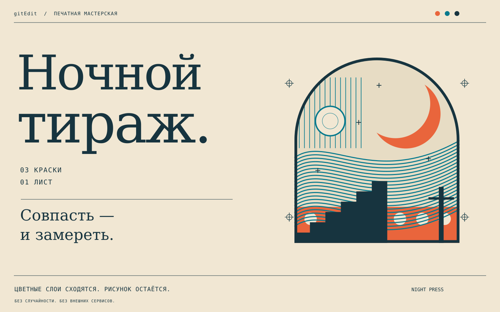

<!doctype html><html lang="ru"><meta charset="utf-8"><meta name="viewport" content="width=device-width"><title>Ночной тираж — цветопроба</title><style>body{margin:0;background:#1c2d34;color:#eee;font:18px system-ui;padding:20px}main{max-width:1000px;margin:auto}img{width:100%;height:auto;display:block}a{color:#ffd0a3}p{line-height:1.5}@media(max-width:640px){body{padding:10px}}</style><main><a href="../../atlas/pressroom.md"><picture>
  <source media="(max-width: 640px) and (prefers-reduced-motion: reduce)" srcset="../../assets/pressroom/still-mobile.svg">
  <source media="(prefers-reduced-motion: reduce)" srcset="../../assets/pressroom/still.svg">
  <source media="(max-width: 640px)" srcset="../../assets/pressroom/motion-mobile.svg">
  
</picture></a><p>Локальная цветопроба изображения. <a href="still.svg">Открыть неподвижный SVG</a>.</p></main></html>